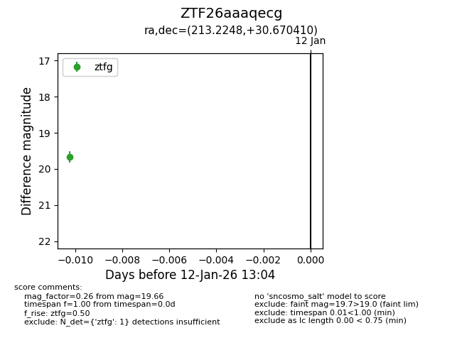
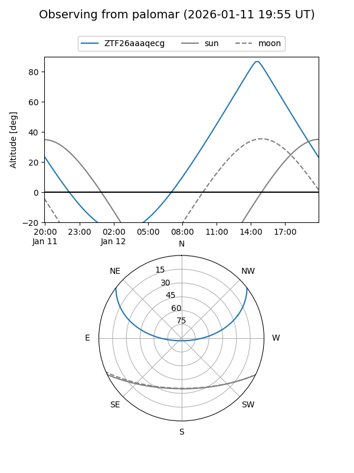

ZTF26aaaqecg
Target ZTF26aaaqecg at 2026-01-12 13:05
Aliases and brokers:
FINK: link
Lasair: link
ALeRCE: link
alt names
ZTF26aaaqecg (ztf,fink_ztf)
Coordinates:
equatorial (ra, dec) = 213.2248,+30.67041
equatorial (HMS+DMS) = 14:12:53.95,+30:40:13.48
galactic (l, b) = (49.0147,+71.84938)
Flags:
Photometry:
last ztfg=19.66
1 ztfg detections
Lightcurve

Visibility


Additional plots